Lecture 8-9 Real-time Global Illumination （Screen Space）
Screen Space : 利用相机视角渲染出来的屏幕中的所有信息 可以认为是对渲染结果的Post Processing
Screen Space Ambient Occlusion (SSAO)
AO 环境光遮蔽 : 通过Contact Shadow使物体间相对位置明显SSAO : 对全局光照的近似的屏幕空间方法
Key idea :
- 不知道间接光照
- 假定间接光照值是常数（对所有着色点、从所有方向）
- like Blinn-Phong
- 考虑不同着色点对各方向的Visibility（不同于Blinn-Phong的地方）
离线渲染中的AO——“天光”：等同于一个完全均匀的光照
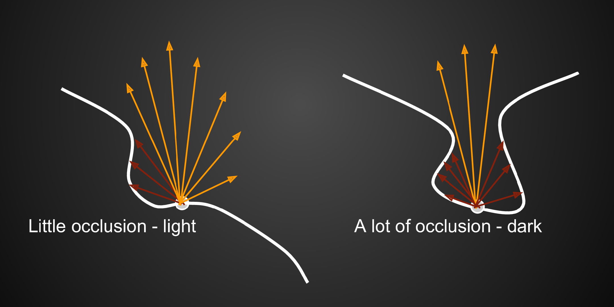
Theory :
Rendering Equation \[ L_o(\mathrm p,\omega_0)=\int_{\Omega_\mathrm{patch}}L_i(\mathrm p,\omega_i)f_r(\mathrm p,\omega_i,\omega_0)V(\mathrm p,\omega_i)\cos\theta_i\,\mathrm d\omega_i \]
考虑对Rendering Equation的近似（“The RTR Approximation / Equation”） \[ \int_\Omega f(x)g(x)\,\mathrm d x\approx\dfrac{\int_{\Omega_G} f(x)\,\mathrm d x}{\int_{\Omega_G} \,\mathrm d x}\cdot\int_\Omega g(x)\,\mathrm d x \] 将Visibility项拆出，得： \[ \begin{aligned} L_o^{\rm indir}(\mathrm p,\omega_0)\approx&\dfrac{\int_{\Omega_+} V(\mathrm p,\omega_i)\cos\theta_i\,\mathrm d\omega_i}{\int_{\Omega_+}\cos\theta_i\,\mathrm d\omega_i}\cdot\\ \approx&\int_{\Omega_+}L_i^{\rm indir}(\mathrm p,\omega_i)f_r(\mathrm p,\omega_i,\omega_0)\cos\theta_i\,\mathrm d\omega_i\\ =&k_A\cdot \underbrace{L_i^{\rm indir}(p)\rho}_{\rm constant\ for\ AO} \end{aligned} \]
A deeper understanding 1 \[ \begin{aligned} \int_\Omega f(x)g(x)\,\mathrm d x&\approx\dfrac{\int_{\Omega_G} f(x)\,\mathrm d x}{\int_{\Omega_G} \,\mathrm d x}\cdot\int_\Omega g(x)\,\mathrm d x\\ &=\overline{f(x)}\cdot\int_\Omega g(x)\,\mathrm d x \end{aligned} \] 由于 \(g(x)\) 值小且平滑时该近似较准确，此处 \(g(x)\) 为常数，为准确拆分。
A deeper understanding 2 前面积分中， \(\,\mathrm d x\) 总是跟着 \(\cos\theta_i\) => 半球上的立体角投影 \(\,\mathrm d x_\perp=\cos\theta_i\,\mathrm d \omega_i\) ，将球面积分转换为圆盘积分（积分值为圆盘面积 \(\pi\) ） 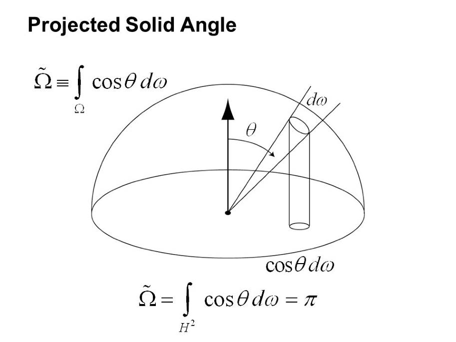
回到SSAO的简单情况：
均匀间接光照 \(L_i\) [常数]
Diffuse材质BRDF \(f_r=\dfrac{\rho}{\pi}\) [常数]
Rendering Equation拆成： \[ \begin{aligned} L_o(\mathrm p,\omega_0)&=\int_{\Omega_+}L_i(\mathrm p,\omega_i)f_r(\mathrm p,\omega_i,\omega_0)V(\mathrm p,\omega_i)\cos\theta_i\,\mathrm d\omega_i\\ &=\dfrac{\rho}{\pi}\cdot L_i(p)\cdot\int_{\Omega_+}V(\mathrm p,\omega_i)\cos\theta_i\mathrm d\omega_i \end{aligned} \] 则即需求 \(k_A\)
How to compute : + In object space + Raycasting against geometry + Slow, require simplifications and / or spatial data structures + Depends of scene complexity + In screen space + Done in a post-rendering pass + No pre-processing required + Doesn’t depend on scene comple + Simple + Not physically accurate
SSAO
- 考虑特定半径半球范围内的遮挡关系（忽略远处的间接光照）
- 在半径范围内随机撒点，通过点在物体内/外判断对光源可见性 判断方法：通过Z-Buffer记录的物体深度直接判断（可能出现中图红线处的判断失误，忽略该失误）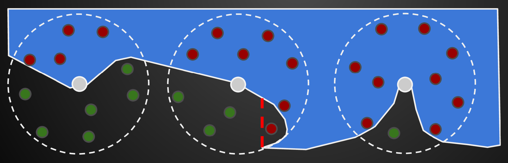
- 理论上应在法线方向半球范围内考虑，但渲染过程不一定有Normal-Buffer。 则考虑，仅当随机点中有超过一半在物体内时考虑AO问题。计算时 \({\rm AO} = \dfrac{物体外的点}{物体内的点-随机点总数/2}\)
- 随机点采样数不足时，易出现噪点，可以后期直接降噪应用，对画面影响较小
- 问题：在两个完全不接触的物体边界可能出现AO效果
HBAO , Horizon based Ambient Occlusion : 在有Normal-Buffer情况下，在半球范围内撒点采样，对不同方向加权（根据方向与法线的差值）。（更加精确，也改善了不接触的物体边界的问题。）
Screen Space Directional Occlusion (SSDO)
在SSAO基础上的提升，考虑更加精确的间接光照
Key idea :
- 不再假设间接光照都是均匀的
- 有一些间接光照的信息已经知道——参考RSM中，直接光照的接收者
效果 : 遮蔽不再简单变暗，而是带有Color Blending效果
思路 :
- 很像Path Tracing
- 在着色点P处随机发射一根光线
- 若未hit物体，则判为直接光照
- 若hit物体，则判为间接光照
Comparison with SSAO :
- AO : 未被挡住的有间接光照、被挡住的没有
- DO : 未被挡住的无间接光照、被挡住的有
原因：AO假设间接光照来自远处、DO假设间接光照来自近处。理论正确方法=AO+DO。
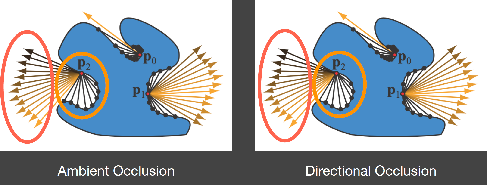
Theory : \[ L_o^{\rm dir}(\mathrm p,\omega_0)=\int_{\Omega_+,\,V=1}L_i^{\rm dir}(\mathrm p,\omega_i)f_r(\mathrm p,\omega_i,\omega_0)\cos\theta_i\,\mathrm d\omega_i\\ L_o^{\rm indir}(\mathrm p,\omega_0)=\int_{\Omega_+,\,V=0}L_i^{\rm indir}(\mathrm p,\omega_i)f_r(\mathrm p,\omega_i,\omega_0)\cos\theta_i\,\mathrm d\omega_i \] 则关注下式，求 \(V=0\) 时得到的间接光照，来自一个patch/pixel的间接光照求法在前课中已介绍
具体做法
对着色点P法线方向的半球内，随机取几个点（eg. 下图ABCD）
同SSAO，用相机对采样点的可见性替代P点对采样点的可见性，得到满足要求的不可见点
将满足要求的不可见点作为间接光源计算P点处间接光照
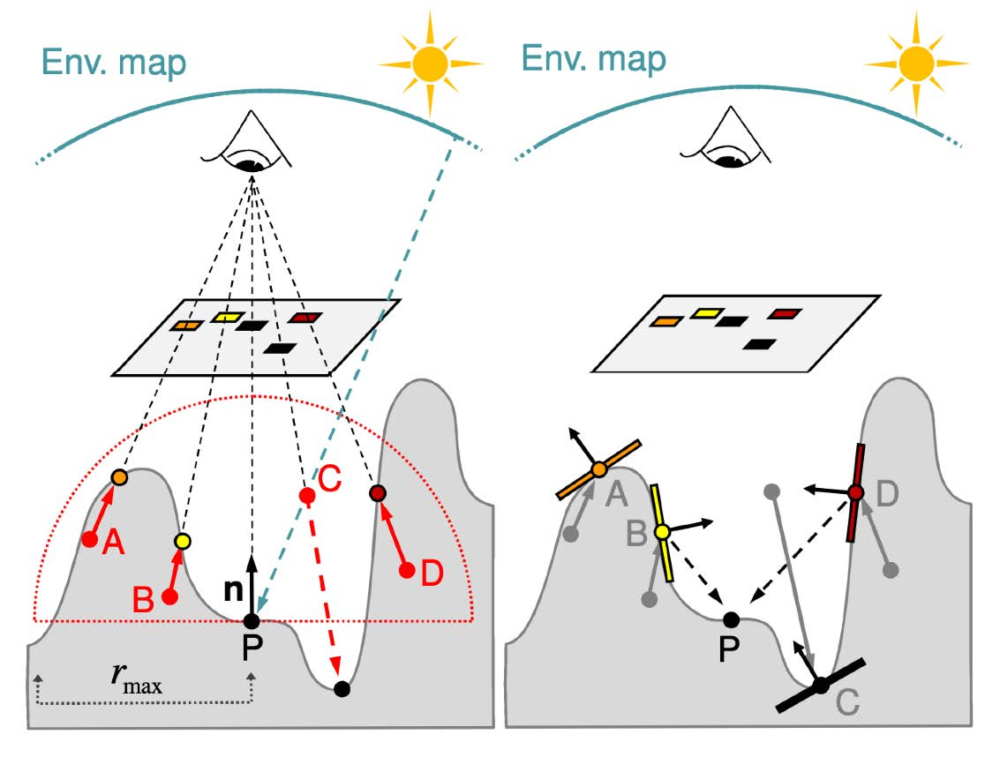
BUG：如下图出现前后非接触物体时，用相机对采样点的可见性替代P点对采样点的可见性会错误 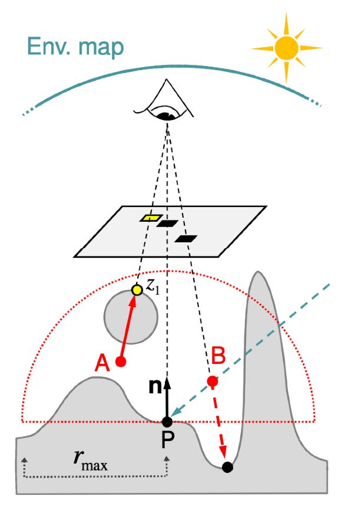
问题 :
只能实现小范围的全局光照（半球范围内）
可见性问题（参考具体做法.BUG）
丢失不可见面信息（所有SS方法都有的问题） eg. 下图中图3/4旋转后，丢失了方块深度面上的DO 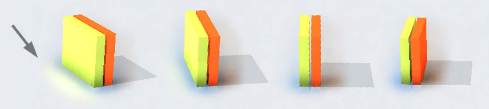
Screen Space Reflection (SSR)
// “Screen Space Ray Tracing”
SSR : 在屏幕空间作光线追踪
- Intersection : 任意光线与屏幕空间的场景求交
- Shading : 交点处像素对着色点的“贡献”
PS.反射信息绝大部分都是屏幕空间中已有的内容
可以做
- Specular 从着色点处trace镜面方向光线
- Glossy 从着色点处，trace多根光线（根据BRDF）
- Medium smoothness + normals 不光滑平面，根据法线和BRDF…
- Variable smoothness
做法
Intersection
逐渐往前走一小步
每步与Z-Buffer对比深度，若在深度内则判定相交 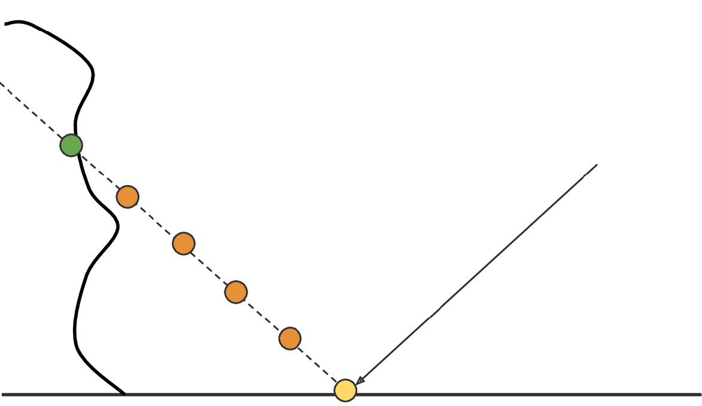
步长过大不精准、过小效率低——动态自适应步长
作深度的Mipmap（每一层的像素是下一层对应四个像素中的最小值，“最小池化”） 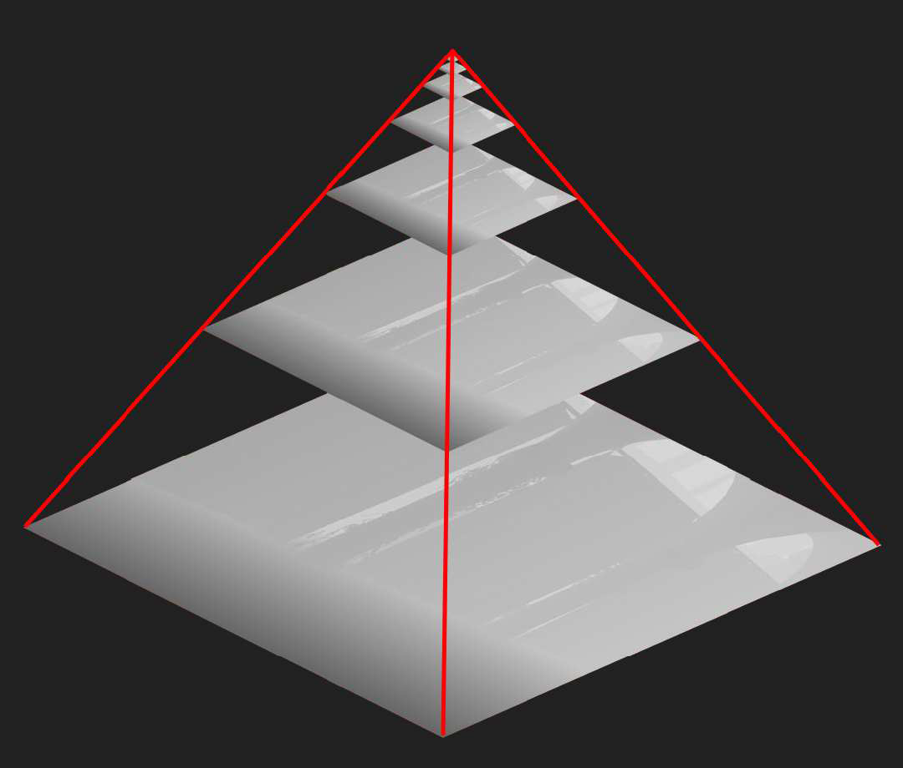
类似BVH、KD-Tree的加速结构
在与上层（低分辨率）的深度图相交的情况下，下层（高分辨率）的深度图才可能相交 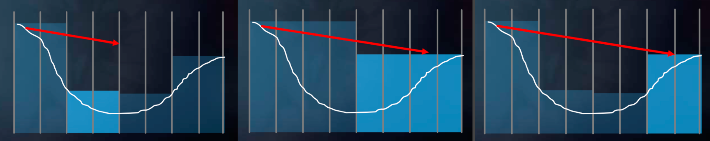
先以低步长前进、与高精度Mipmap判断，若无相交则增大步长、降低Mipmap精度，若无相交则继续增大步长、降低Mipmap精度，直到产生相交则减小步长，提高Mipmap精度，直至最高精度
mip = 0; while (level > -1) step through current cell; if (above Z plane) ++level; if (below Z plane) --level;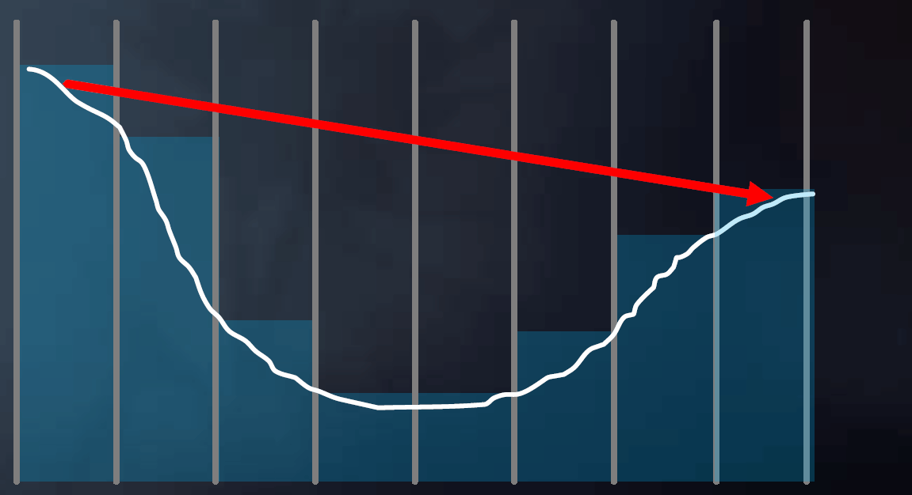
问题 : Screen Space 被遮挡的物体、范围外的物体均不参与反射，通常在反射边界做虚化
Theory : 与Path Tracing无异——仅假设被反射物（非反射材质）和次级光源为diffuse。（没有距离衰减、没有次级光源与着色点之间的可见性问题。）
类似Path Tracing带来的效果
- 通过不同BRDF（不同数量光线）实现镜面、Glossy等多种反射
- Contact hardening 离反射面越近越Sharp的现象
- Specular elongation 各向同性问题（雨天灯光拉长）
- 逐像素的Roughness和Normal
Improvements
- BRDF的重要性采样
- 邻近pixel的hit复用，增加了采样数
- 屏幕空间先做模糊，再做单次查询（filter较难做）
Summary
- Pros
- 快速的Specular/Gloss反射
- 高质量
- 没有Spike和遮挡问题
- Cons
- 效率较Diffuse情况低
- 丢失屏幕空间以外的信息